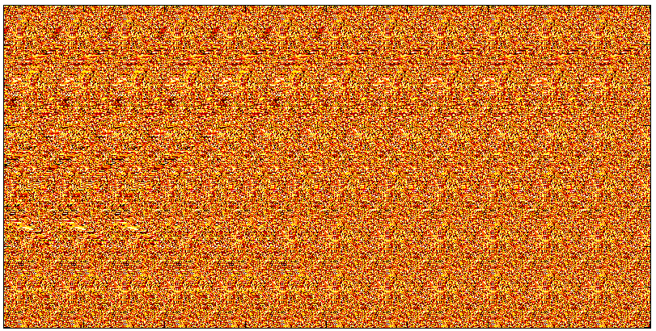
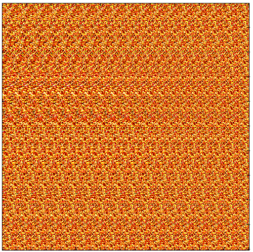
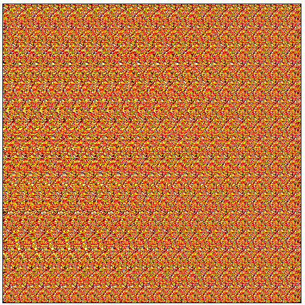

Demonstrate the absird matlab implementation
Contents
Background
This makeAbsird function interprates the input data as a height-map and converts it to a random dot autostereogram. A random dot autosterogram is an image that can be percieved as 3-dimensional by viewing it in the proper way. For more information on random dot sterograms, see http://en.wikipedia.org/wiki/Autostereogram
The algorithm used is abSIRD, published in 2004 by Lewey Geselowitz. It is a fast, in-place algorithm that is exquisitly simple to implement. For more information, see http://www.leweyg.com/download/SIRD/index.html
It is very important that the images be shown at full size for the 3d-effect to appear.
Daniel Armyr, 2010
Shark demo
A shark taken from Wikipedia (http://en.wikipedia.org/wiki/File:Stereogram_Tut_Shark_Depthmap.png)
{kind=link}
ScrData = imread('shark.png');
makeAbsird( mean(ScrData,3), 64 );

Matlab logo demo
The Matlab logo as seen from above.
clear; ScrData = membrane(1,250,9,2); makeAbsird( ScrData, 32 );

Peaks demo
The classical peaks() function from above.
clear; ScrData = peaks(500); makeAbsird( ScrData, 32 );

Algorithm code
type ( 'makeAbsird.m' );
function [ imageData ] = makeAbsird( imageData, randSize )
%MAKEABSIRD Converts a depth-map into a random dot stereogram.
% This function interprates imageData as a height-map and converts it to a
% random dot stereogram. A random dot sterogram is an image that can be
% percieved as 3-dimensional by viewing it in the proper way. For more
% information on random dot sterograms, see
% http://en.wikipedia.org/wiki/Autostereogram
%
% The algorithm used is abSIRD, published in 2004 by Lewey Geselowitz. It
% is a fast, in-place algorithm that is exquisitly simple to implement. For
% more information, see http://www.leweyg.com/download/SIRD/index.html
%
% makeAbsird( DATA ) converts DATA into a stereogram and displays it in
% the current axis, modifying the size to ensure the 3d effect isn't
% destroyed.
%
% makeAbsird( DATA, N ) converts DATA into a stereogram, using a ramdom seed
% of NxN pixels.
%
% OUT = makeAbsird( ... ) does not do a plot but instead returns the image
% data.
%
% Daniel Armyr, 2010
if ( nargin < 2 )
randSize = 32;
end
% Check some properties of input data.
assert ( ndims(imageData) == 2 );
assert ( isreal(imageData) );
% Remove any NANs or INFs as they upset the algorithm.
imageData(isnan(imageData)) = 0;
imageData(isinf(imageData)) = 0;
% Scale the data and reduce the depth.
imageData = imageData - min(imageData (:));
imageData = round(imageData/max(imageData(:))*randSize/3);
% Create a random seed to build the image from.
RandData = round(rand(randSize)*256);
% Pre-calculate some sizes that are important to the algorithm.
ScrW = size(imageData,2);
RandW = size(RandData,2);
RandH = size(RandData,1);
% Loop through all the rows.
for y = 1:size(imageData,1)
%Start by the rightmost copy of the random seed.
for x = ScrW:-1:ScrW-RandW
index = mod(x-imageData(y,x), RandW-1)+1;
imageData(y,x) = RandData( mod(y,RandH-1)+1, index );
end
% Recalculate all the remaining pixels on the line.
for x=ScrW-RandW-1:-1:1
index = x+RandW-imageData(y,x)+1;
imageData(y,x) = imageData(y,index);
end
end
% If we have no output argument, present a plot where each point is a pixel
% on the screen.
if ( nargout < 1 )
h = imagesc ( imageData );
colormap ( hot );
grid ( 'off' );
g = get( h, 'Parent');
set ( g, 'Units', 'Pixels' );
set( g, 'Position', [5 5 size(imageData,2) size(imageData,1)] );
f = get( g, 'Parent' );
set ( f, 'Units', 'Pixels' );
set( f, 'Position', [100 100 size(imageData,2)+10 size(imageData,1)+10] );
end
end